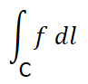

HOME BLOG EBOOKS ABOUT CONTACT SHOP
Line integral or the path integral is the integral of a scalar field (function) evaluated along a curve. For single variable functions, the line integral can only be evaluated over a straight-line path (for obvious reasons) as shown.
Here the line integral is evaluated by considering a bunch of small rectangular strips of width dx and suitable height (which will be equal to the value of the function at the point i.e. f(x)), so as to fill up the area. The area of an individual strip is therefore f(x) dx (width x height) and hence the area of our interest is simply the integral (summation) of these small areas along the path.
For multivariable functions, the line integral can be evaluated along any 2- dimensional path, not just a straight line. In general, the line integral of a scalar function is nothing but the area of the fence created by a curve path and its projection on the function.
The line integral for multivariable functions is evaluated in the same manner as with single variable functions, except that in this case, the line element (width of the rectangular strip) is no longer dx or dy, but a function of dx and dy.
In general, the line integral of a function f along a curve C can be evaluated as:

Moving on to vector fields, the line integral of a vector field can be interpreted as the amount of work that a force field does on an object as it moves along a curve. When you try to move a block along a curve C in space at constant speed through a force field, a force always acts on the block, making it easier or harder to move the block depending on the directions of the forces at a point. If the force acts opposite to the direction of the path, then you have to do work to keep the block moving. On the other hand, if the direction of the force is in the direction of the path, then your job becomes easier because you're being aided by an outside force.
We know that the dot product is a measure of how well 2 vectors work with each other, and therefore the dot product between the vector field and the differential curve element integrated along the entire curve gives the total work done.